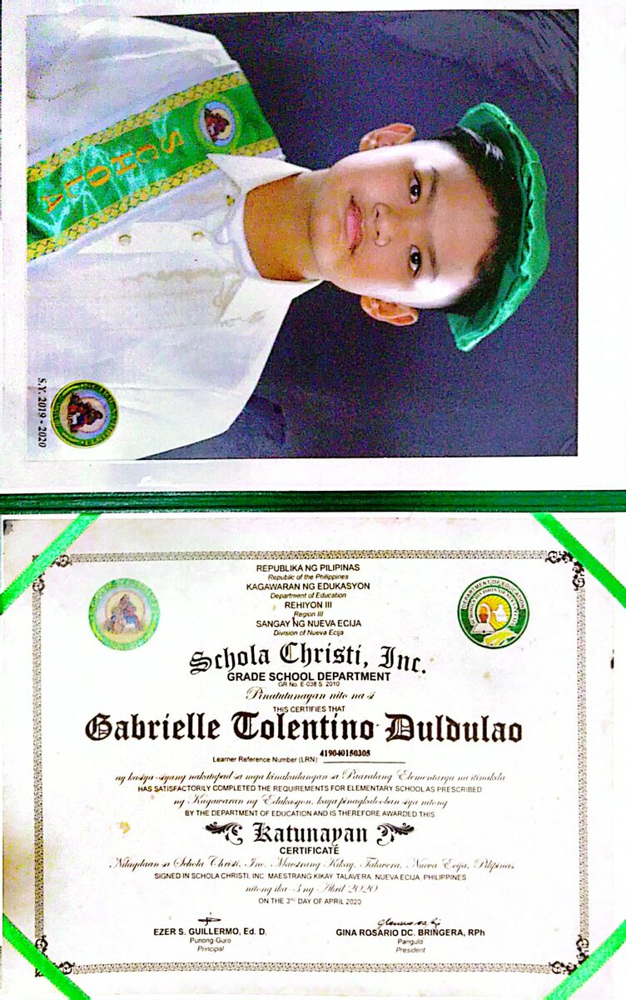

Schola Christi → University of the Cordilleras
B1
Gabrielle T. Duldulao
BGO --:--:--
C1
ElementaryA2
2012—2020

Schola Christi Inc.
Junior High SchoolB2
2020—2024
Talavera National High School
- Completed junior high school
Senior High School · STEMC2
2024—2026
Talavera Senior High School
- With High Honors · STEM 12 – Aurum
- 1st · CD1SPC 2025, layout artist
- 2nd · DSPC 2026 Online Publishing
College · NowD2
2026—Now
University of the Cordilleras
- BS Computer Science · 1st Year · CITCS 1C
4 schools · 2012 → now · hover a photo for color
B3